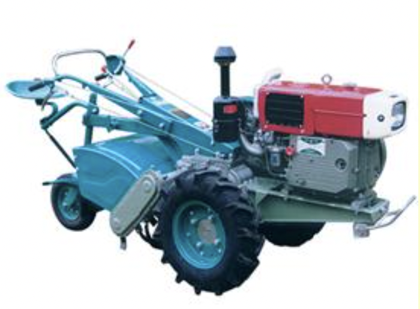

4.0 ਟਿਲੇਜ ਇਮਪਲੀਮੈਂਟਸ
- 4.1.
M.B Plough
- 4.2
ਡਿਸਕ ਪਲੱਗ
- 4.3
ਟਾਈਨ ਟਾਈਪ ਕਲਟੀਵੇਟਰ
- 4.4.
ਡਿਸਕ ਹੈਰੋ
- 4.5
ਪਾਵਰ ਟਿਲਰ ਸੰਚਾਲਿਤ ਰੋਟਰੀ ਟਿਲਰ
- 4.6
ਰੋਟਾਵੇਟਰ
-
4.7
ਪਲਵਰਾਈਜ਼ਿੰਗ ਰੋਲਰ
-
4.8
ਪੈਡੀ ਹੈਰੋ/ਪੁਡਲਰ
4.1 ਮੋਲਡ ਬੋਰਡ ਹਲ

ਵਿਸ਼ੇਸ਼ਤਾਵਾਂ
ਇਹ ਇੱਕ ਟਰੈਕਟਰ ਦੁਆਰਾ ਸੰਚਾਲਿਤ ਉਪਕਰਣ ਹੈ ਅਤੇ ਇਸ ਵਿੱਚ ਸ਼ੇਅਰ ਪੁਆਇੰਟ, ਸ਼ੇਅਰ, ਮੋਲਡ ਬੋਰਡ, ਲੈਂਡਸਲਾਈਡ, ਡੱਡੂ, ਸ਼ੰਕ, ਫਰੇਮ ਅਤੇ ਹਿਚ ਸਿਸਟਮ ਸ਼ਾਮਲ ਹੁੰਦੇ ਹਨ। ਸ਼ੇਅਰ ਪੁਆਇੰਟ ਬਾਰ ਕਿਸਮ ਦਾ ਹੁੰਦਾ ਹੈ ਅਤੇ ਉੱਚ ਕਾਰਬਨ ਸਟੀਲ ਜਾਂ ਘੱਟ ਮਿਸ਼ਰਤ ਸਟੀਲ ਤੋਂ ਬਣਿਆ ਹੁੰਦਾ ਹੈ। ਸ਼ੇਅਰ ਉੱਚ ਕਾਰਬਨ ਸਟੀਲ ਜਾਂ ਘੱਟ ਮਿਸ਼ਰਤ ਸਟੀਲ ਤੋਂ ਵੀ ਬਣਿਆ ਹੈ। ਦੋਵੇਂ ਸਖ਼ਤ ਅਤੇ ਢੁਕਵੀਂ ਕਠੋਰਤਾ (ਲਗਭਗ 45 HRC) ਦੇ ਅਨੁਕੂਲ ਹਨ। ਹਲ ਦੇ ਕੰਮ ਨੂੰ ਹਾਈਡ੍ਰੌਲਿਕ ਪ੍ਰਣਾਲੀ ਅਤੇ ਤਿੰਨ-ਪੁਆਇੰਟ ਲਿੰਕੇਜ ਦੁਆਰਾ ਨਿਯੰਤਰਿਤ ਕੀਤਾ ਜਾਂਦਾ ਹੈ। ਇਸ ਦਾ ਬਾਰ-ਪੁਆਇੰਟ ਮਿੱਟੀ ਦੀ ਹਾਰਡਪੈਨ ਨੂੰ ਤੋੜਨ ਲਈ ਢੁਕਵਾਂ ਬਣਾਉਂਦਾ ਹੈ।
ਨਿਰਧਾਰਨ:
<ਟੇਬਲ>ਵਰਤੋਂ:
ਹਲਾਂ ਦੀ ਵਰਤੋਂ ਪ੍ਰਾਇਮਰੀ ਵਾਢੀ ਦੇ ਕਾਰਜਾਂ ਲਈ ਕੀਤੀ ਜਾਂਦੀ ਹੈ। ਇਹ ਰੱਦੀ ਨੂੰ ਕੱਟਦਾ ਹੈ ਅਤੇ ਇਸ ਨੂੰ ਪੂਰੀ ਤਰ੍ਹਾਂ ਦੱਬ ਦਿੰਦਾ ਹੈ। ਇਸਦੀ ਵਰਤੋਂ ਹਰੀ ਖਾਦ ਦੀ ਫਸਲ ਨੂੰ ਮਿੱਟੀ ਦੇ ਹੇਠਾਂ ਸੜਨ ਲਈ ਬਦਲਣ ਲਈ ਵੀ ਕੀਤੀ ਜਾਂਦੀ ਹੈ, ਜਿਸ ਵਿੱਚ ਹੁੰਮਸ ਮਿਲ ਜਾਂਦੀ ਹੈ ਮਿੱਟੀ. ਖਾਦ, ਖੇਤ ਦੀ ਖਾਦ ਜਾਂ ਚੂਨਾ ਜਦੋਂ ਖੇਤ ਵਿੱਚ ਫੈਲਾਇਆ ਜਾਵੇ ਤਾਂ ਮੋਲਡ ਬੋਰਡ ਹਲ ਹੈ ਇਹਨਾਂ ਸਮੱਗਰੀਆਂ ਨੂੰ ਮਿੱਟੀ ਵਿੱਚ ਮੋੜਨ ਅਤੇ ਮਿਲਾਉਣ ਲਈ ਵਰਤਿਆ ਜਾਂਦਾ ਹੈ।
ਮਸ਼ੀਨ ਦੀ ਕੀਮਤ : 30,000/- ਰੁਪਏ
4.2 ਡਿਸਕ ਹਲ

ਵਿਸ਼ੇਸ਼ਤਾਵਾਂ
ਹਲ ਵਿੱਚ ਆਮ ਮੇਨਫ੍ਰੇਮ, ਡਿਸਕ ਬੀਮ ਅਸੈਂਬਲੀਆਂ, ਰਾਕਸ਼ਾਫਟ ਅਸੈਂਬਲੀ ਅਤੇ ਇੱਕ ਭਾਰੀ ਬਸੰਤ ਨਾਲ ਭਰੇ ਫਰੋ ਵ੍ਹੀਲ ਅਤੇ ਇੱਕ ਗੇਜ ਵ੍ਹੀਲ ਸ਼ਾਮਲ ਹੁੰਦੇ ਹਨ। ਕੁਝ ਮਾਡਲਾਂ ਵਿੱਚ ਡਿਸਕ ਹਲ ਨੂੰ ਲੋੜ ਅਨੁਸਾਰ ਸਬ ਬੀਮ ਅਸੈਂਬਲੀਆਂ ਜੋੜ ਕੇ ਜਾਂ ਹਟਾ ਕੇ, 2, 3 ਜਾਂ 4 ਬੋਟਮਾਂ ਦੇ ਰੂਪ ਵਿੱਚ ਕੰਮ ਕਰਨ ਲਈ ਤਿਆਰ ਕੀਤਾ ਗਿਆ ਹੈ। ਕੱਟ ਦੀ ਲੋੜੀਂਦੀ ਚੌੜਾਈ ਪ੍ਰਾਪਤ ਕਰਨ ਲਈ ਡਿਸਕ ਦਾ ਕੋਣ 40º ਤੋਂ 45º ਤੱਕ ਹੁੰਦਾ ਹੈ ਅਤੇ ਘੁਸਪੈਠ ਲਈ ਝੁਕਣ ਵਾਲਾ ਕੋਣ 15º ਤੋਂ 25º ਤੱਕ ਹੁੰਦਾ ਹੈ। ਹਲ ਦੀਆਂ ਡਿਸਕਾਂ ਉੱਚ ਕਾਰਬਨ ਸਟੀਲ ਜਾਂ ਮਿਸ਼ਰਤ ਸਟੀਲ ਦੀਆਂ ਬਣੀਆਂ ਹੁੰਦੀਆਂ ਹਨ ਅਤੇ ਕਿਨਾਰਿਆਂ ਨੂੰ ਸਖ਼ਤ ਅਤੇ ਤਿੱਖਾ ਕੀਤਾ ਜਾਂਦਾ ਹੈ। ਡਿਸਕਾਂ ਨੂੰ ਟੇਪਰਡ ਰੋਲਰ ਬੇਅਰਿੰਗਾਂ 'ਤੇ ਮਾਊਂਟ ਕੀਤਾ ਜਾਂਦਾ ਹੈ। ਪ੍ਰਦਾਨ ਕੀਤੇ ਗਏ ਸਕ੍ਰੈਪਰ ਸਟਿੱਕੀ ਮਿੱਟੀ ਵਿੱਚ ਡਿਸਕਸ ਉੱਤੇ ਮਿੱਟੀ ਨੂੰ ਬਣਾਉਣ ਤੋਂ ਰੋਕਦੇ ਹਨ। ਫਰੋ ਦਾ ਟੁਕੜਾ ਵਕਰਤਾ ਦੇ ਨਾਲ ਸਵਾਰ ਹੁੰਦਾ ਹੈ ਅਤੇ ਸੁੱਟੇ ਜਾਣ ਤੋਂ ਪਹਿਲਾਂ ਕੁਝ ਹੱਦ ਤੱਕ ਪੁੱਟਿਆ ਜਾਂਦਾ ਹੈ।
ਨਿਰਧਾਰਨ:
<ਟੇਬਲ>ਵਰਤੋਂ:
ਡਿਸਕ ਹਲ ਦੀ ਵਰਤੋਂ ਪ੍ਰਾਇਮਰੀ ਵਾਢੀ ਲਈ ਕੀਤੀ ਜਾਂਦੀ ਹੈ ਅਤੇ ਖਾਸ ਤੌਰ 'ਤੇ ਸਖ਼ਤ ਅਤੇ ਸੁੱਕੀ, ਕੂੜਾ-ਕਰਕਟ, ਪੱਥਰੀਲੀ ਜਾਂ ਤੂੜੀ ਵਾਲੀ ਜ਼ਮੀਨ ਦੇ ਹਾਲਾਤਾਂ ਅਤੇ ਮਿੱਟੀ ਵਿੱਚ ਜਿੱਥੇ ਖੁਰਚਣਾ ਇੱਕ ਵੱਡੀ ਸਮੱਸਿਆ ਹੈ, ਵਿੱਚ ਉਪਯੋਗੀ ਹੈ।
ਮਸ਼ੀਨ ਦੀ ਕੀਮਤ: 30,000/- ਰੁਪਏ
4.3 ਟਾਇਨ ਟਾਈਪ ਕਲਟੀਵੇਟਰ

ਵਿਸ਼ੇਸ਼ਤਾਵਾਂ
ਇਸ ਵਿੱਚ ਇੱਕ ਫਰੇਮ, ਉਲਟੇ ਜਾਣ ਵਾਲੇ ਬੇਲਚਿਆਂ ਵਾਲੇ ਟਾਇਨਸ, ਅੜਿੱਕਾ ਸਿਸਟਮ ਅਤੇ ਹੈਵੀ-ਡਿਊਟੀ ਸਪ੍ਰਿੰਗਸ ਸ਼ਾਮਲ ਹੁੰਦੇ ਹਨ। ਬਸੰਤ ਦਾ ਕੰਮ ਕਾਸ਼ਤਕਾਰ ਦੀਆਂ ਕਿਸਮਾਂ ਨੂੰ ਟੁੱਟਣ ਤੋਂ ਬਚਾਉਣਾ ਹੈ ਜਦੋਂ ਕੋਈ ਸਖ਼ਤ ਵਸਤੂ ਅੰਦਰ ਆਉਂਦੀ ਹੈ ਬੇਲਚਾ ਦੇ ਨਾਲ ਜਾਂ ਟਾਈਨ ਦੇ ਹੇਠਾਂ ਸੰਪਰਕ ਕਰੋ। ਬੇਲਚੇ ਲੰਬੇ ਜੀਵਨ ਲਈ ਗਰਮੀ ਨਾਲ ਇਲਾਜ ਕੀਤੇ ਸਟੀਲ ਦੇ ਬਣੇ ਹੁੰਦੇ ਹਨ। ਉਪਕਰਣ ਮਾਊਂਟਡ ਕਿਸਮ ਦਾ ਹੁੰਦਾ ਹੈ ਅਤੇ ਟਰੈਕਟਰ ਦੇ ਹਾਈਡ੍ਰੌਲਿਕ ਸਿਸਟਮ ਦੁਆਰਾ ਨਿਯੰਤਰਿਤ ਕੀਤਾ ਜਾਂਦਾ ਹੈ।
ਨਿਰਧਾਰਨ:
| ਲੰਬਾਈ (mm) | : 1960-3000 |
| ਚੌੜਾਈ (mm) | : 970-1560 |
| ਉਚਾਈ (mm) | : 1070-1350 |
| ਟਾਈਨਾਂ ਦੀ ਸੰਖਿਆ | : 7, 9,11 ਜਾਂ 13 |
| ਸਪਰਿੰਗ ਤਾਰ ਦਾ ਵਿਆਸ (mm) | : 9.5 |
| ਵਜ਼ਨ (ਕਿਲੋਗ੍ਰਾਮ) | : 00-350 |
| ਆਉਟਪੁੱਟ ਸਮਰੱਥਾ (ha/h) | : 0.5 -0.6 |
| ਪਾਵਰ ਦਾ ਸਰੋਤ (hp/kW) | : 35/26.25, ਟਰੈਕਟਰ |
ਵਰਤੋਂ:
ਸੁੱਕੀ ਅਤੇ ਗਿੱਲੀ ਮਿੱਟੀ ਦੋਵਾਂ ਵਿੱਚ ਬੀਜ ਤਿਆਰ ਕਰਨ ਲਈ ਕਾਸ਼ਤਕਾਰਾਂ ਦੀ ਵਰਤੋਂ ਕੀਤੀ ਜਾਂਦੀ ਹੈ। ਇਹ ਕਤਾਰ ਤੋਂ ਕਤਾਰ ਦੀ ਦੂਰੀ ਦੇ ਅਨੁਸਾਰ ਟਾਇਨਾਂ ਨੂੰ ਅਨੁਕੂਲ ਕਰਕੇ ਅੰਤਰ-ਸਭਿਆਚਾਰਕ ਕਾਰਵਾਈ ਲਈ ਵੀ ਵਰਤਿਆ ਜਾਂਦਾ ਹੈ। ਇਸ ਨੂੰ ਛੱਪੜ ਦੇ ਉਦੇਸ਼ਾਂ ਲਈ ਵੀ ਵਰਤਿਆ ਜਾਂਦਾ ਹੈ
ਮਸ਼ੀਨ ਦੀ ਕੀਮਤ : 25,000/- ਰੁਪਏ ਤੋਂ 30,000/- ਰੁਪਏ
| ਲੰਬਾਈ (mm) | : 1980-2260 |
| ਚੌੜਾਈ (mm) | : 1150-1900 |
| ਉਚਾਈ (mm) | : 1143-1350 |
| ਡਿਸਕਾਂ ਦੀ ਗਿਣਤੀ | : 10-16 |
| ਡਿਸਕ ਦਾ ਵਿਆਸ (mm) | : 457-660 |
| ਡਿਸਕ ਦੀ ਪਿੱਚ: | : 228-280 |
| ਵਜ਼ਨ (ਕਿਲੋਗ੍ਰਾਮ) | : 330-490 |
| ਸਮਰੱਥਾ (ha/day) | : 2.5 |
| ਪਾਵਰ ਦੀ ਲੋੜ (hp/kW) | : 20-60/15-45, ਟਰੈਕਟਰ |
ਵਰਤੋਂ:
ਬਿਜਾਈ ਲਈ ਮਿੱਟੀ ਦੀ ਤਿਆਰੀ, ਜੈਵਿਕ ਪਦਾਰਥਾਂ ਅਤੇ ਅਵਸ਼ੇਸ਼ਾਂ ਨੂੰ ਦਫ਼ਨਾਉਣ ਅਤੇ ਮਿੱਟੀ ਨੂੰ ਹਵਾ ਦੇਣ ਲਈ ਅਤੇ ਨਦੀਨਾਂ ਨੂੰ ਖਤਮ ਕਰੋ। ਇਹ ਫੀਲਡ ਡਿਸਕਿੰਗ ਲਈ ਆਦਰਸ਼ ਹੈ, ਖਾਸ ਤੌਰ 'ਤੇ ਬਾਗਾਂ, ਬਾਗਾਂ ਅਤੇ ਬਾਗਾਂ ਵਿੱਚ। ਇਹ ਬੰਨ੍ਹਾਂ ਅਤੇ ਵਾੜ ਦੀਆਂ ਚੌਕੀਆਂ ਦੇ ਨੇੜੇ ਰੁੱਖਾਂ ਦੇ ਹੇਠਾਂ ਕੰਮ ਕਰਨ ਲਈ ਢੁਕਵਾਂ ਹੈ।
ਲਾਗਤ: ਰੁਪਏ 35,000/-
4.5 ਪਾਵਰ ਟਿਲਰ ਸੰਚਾਲਿਤ ਰੋਟਰੀ ਟਿਲਰ
ਵਿਸ਼ੇਸ਼ਤਾਵਾਂ
ਪਾਵਰ ਟਿਲਰ ਇੱਕ 8-15 hp ਡੀਜ਼ਲ ਇੰਜਣ ਨਾਲ ਸੰਚਾਲਿਤ ਹੈ। ਇੰਜਣ ਦੀ ਸ਼ਕਤੀ ਨੂੰ ਪ੍ਰਸਾਰਿਤ ਕੀਤਾ ਜਾਂਦਾ ਹੈ V-ਬੈਲਟ ਪੁਲੀ ਰਾਹੀਂ ਜ਼ਮੀਨੀ ਪਹੀਏ। ਨੂੰ ਬਰਕਰਾਰ ਰੱਖਣ ਲਈ ਪਿਛਲੇ ਪਾਸੇ ਟੇਲ ਵ੍ਹੀਲ ਦਿੱਤਾ ਗਿਆ ਹੈ ਓਪਰੇਟਿੰਗ ਡੂੰਘਾਈ. ਰੋਟਰੀ ਵੇਡਿੰਗ ਅਟੈਚਮੈਂਟ ਵੇਡਿੰਗ ਕਰਦਾ ਹੈ। ਰੋਟਰੀ ਵੇਡਰ ਵਿੱਚ ਡਿਸਕਾਂ ਦੀਆਂ ਤਿੰਨ ਕਤਾਰਾਂ ਹੁੰਦੀਆਂ ਹਨ ਜੋ ਹਰ ਇੱਕ ਡਿਸਕ ਉੱਤੇ ਵਿਕਲਪਿਕ ਤੌਰ 'ਤੇ ਉਲਟ ਦਿਸ਼ਾਵਾਂ ਵਿੱਚ 6 ਨੰਬਰ ਦੇ ਕਰਵ ਬਲੇਡਾਂ ਨਾਲ ਮਾਊਂਟ ਹੁੰਦੀਆਂ ਹਨ। ਇਹ ਬਲੇਡ ਮਿੱਟੀ ਨੂੰ ਕੱਟਣ ਅਤੇ ਮਲਚਿੰਗ ਕਰਨ ਵਿੱਚ ਮਦਦ ਕਰਦੇ ਹਨ। ਰੋਟਰੀ ਟਿਲਰ ਦੇ ਕਵਰੇਜ ਦੀ ਚੌੜਾਈ 500 ਮਿਲੀਮੀਟਰ ਅਤੇ ਡੂੰਘਾਈ ਹੈ ਸੰਚਾਲਨ ਨੂੰ ਨਦੀਨ ਦੇ ਅਨੁਕੂਲ ਕੀਤਾ ਜਾ ਸਕਦਾ ਹੈ ਅਤੇ ਫਸਲ ਵਾਲੇ ਖੇਤ ਵਿੱਚ ਮਿੱਟੀ ਨੂੰ ਮਲਚ ਕੀਤਾ ਜਾ ਸਕਦਾ ਹੈ।
ਨਿਰਧਾਰਨ:
| ਲੰਬਾਈ (mm) | : 2400 |
| ਚੌੜਾਈ (mm) | : 1750 |
| ਉਚਾਈ (mm) | : 1100 |
| ਕਤਾਰ ਤੋਂ ਕਤਾਰ ਸਪੇਸਿੰਗ (mm) | : 450 |
| ਵਜ਼ਨ (ਕਿਲੋਗ੍ਰਾਮ) | : 200 |
| ਸਮਰੱਥਾ (ha/h) | : 0.12 -0.15 |
ਵਰਤੋਂ:
ਇਹ ਟੇਪੀਓਕਾ, ਕਪਾਹ, ਗੰਨਾ, ਮੱਕੀ ਵਰਗੀਆਂ ਫਸਲਾਂ ਵਿੱਚ ਨਦੀਨਾਂ ਦੇ ਮਕੈਨੀਕਲ ਕੰਟਰੋਲ ਲਈ ਹੈ। ਟਮਾਟਰ ਅਤੇ ਦਾਲਾਂ ਜਿਨ੍ਹਾਂ ਦੀਆਂ ਕਤਾਰਾਂ ਦੀ ਵਿੱਥ 450 rnm ਤੋਂ ਵੱਧ ਹੈ। ਅਟੈਚਮੈਂਟ ਜਿਵੇਂ ਸਵੀਪ ਬਲੇਡ, ਰਿਜ਼ਰ, ਟ੍ਰੇਲਰ ਨੂੰ ਮਸ਼ੀਨ ਨਾਲ ਵਰਤਿਆ ਜਾ ਸਕਦਾ ਹੈ. ਹਲਕੇ ਭਾਰ ਵਾਲੇ ਪਾਵਰ ਟਿਲਰ ਦੀ ਵਰਤੋਂ ਹੇਠਾਂ ਵਾਢੀ ਲਈ ਵੀ ਕੀਤੀ ਜਾ ਸਕਦੀ ਹੈ ਪਹਾੜੀ ਖੇਤੀ ਅਤੇ ਛੱਤ ਦੀ ਖੇਤੀ।
ਮਸ਼ੀਨ ਦੀ ਕੀਮਤ: 1,25,000/- ਰੁਪਏ
4.6 ਰੋਟਾਵੇਟਰ

ਵਿਸ਼ੇਸ਼ਤਾਵਾਂ
ਇਸ ਵਿੱਚ ਇੱਕ ਸਟੀਲ ਫਰੇਮ, ਇੱਕ ਰੋਟਰੀ ਸ਼ਾਫਟ ਜਿਸ ਉੱਤੇ ਬਲੇਡ ਮਾਊਂਟ ਕੀਤੇ ਜਾਂਦੇ ਹਨ, ਪਾਵਰ ਟ੍ਰਾਂਸਮਿਸ਼ਨ ਸ਼ਾਮਲ ਹੁੰਦੇ ਹਨ। ਸਿਸਟਮ ਅਤੇ ਗਿਅਰਬਾਕਸ। ਬਲੇਡ L- ਕਿਸਮ ਦੇ ਹੁੰਦੇ ਹਨ, ਮੱਧਮ ਕਾਰਬਨ ਸਟੀਲ ਜਾਂ ਮਿਸ਼ਰਤ ਸਟੀਲ ਤੋਂ ਬਣੇ ਹੁੰਦੇ ਹਨ, ਸਖ਼ਤ ਅਤੇ ਢੁਕਵੀਂ ਕਠੋਰਤਾ ਲਈ ਨਰਮ. ਟਰੈਕਟਰ ਦਾ PTO ਰੋਟਾਵੇਟਰ ਚਲਾਉਂਦਾ ਹੈ। ਪੀਟੀਓ ਦੀ ਰੋਟਰੀ ਮੋਸ਼ਨ ਹੈ ਗੀਅਰਬਾਕਸ ਅਤੇ ਟਰਾਂਸਮਿਸ਼ਨ ਸਿਸਟਮ ਦੁਆਰਾ ਬਲੇਡਾਂ ਨੂੰ ਚੁੱਕਣ ਵਾਲੇ ਸ਼ਾਫਟ ਵਿੱਚ ਪ੍ਰਸਾਰਿਤ ਕੀਤਾ ਜਾਂਦਾ ਹੈ। ਇੱਕ ਚੰਗਾ ਸੀਡ ਬੈੱਡ ਅਤੇ ਰੋਟਾਵੇਟਰ ਦੇ ਇੱਕ ਸਿੰਗਲ ਪਾਸ ਵਿੱਚ ਮਿੱਟੀ ਦੀ ਪੁਟਾਈ ਕੀਤੀ ਜਾਂਦੀ ਹੈ।
ਨਿਰਧਾਰਨ:
| ਲੰਬਾਈ (mm) | : 1760-2080 |
| ਚੌੜਾਈ (mm) | : 950-1050 |
| ਉਚਾਈ (mm) | : 935-1110 |
| ਰੋਟਾਵੇਟਰ ਦੀ ਵਰਕਿੰਗ ਚੌੜਾਈ (mm) | : 1000-2000 |
| ਬਲੇਡ ਦੀ ਸ਼ਕਲ | : L-ਸ਼ੇਪ |
| ਬਲੇਡ ਦੀ ਮੋਟਾਈ (mm) | : 7-10 |
| ਫਲੈਂਜਾਂ ਦੀ ਕੁੱਲ ਸੰਖਿਆ | : 6-8 |
| ਪ੍ਰਤੀ ਫਲੈਂਜ ਬਲੇਡਾਂ ਦੀ ਸੰਖਿਆ | : 6 |
| ਰੋਟਰ ਸ਼ਾਫਟ ਦਾ ਵਿਆਸ (mm) | : 70-90 |
| ਰੋਟਰ ਵਿਆਸ (mm) | : 420-435 |
| ਰੋਟਰ ਸ਼ਾਫਟ (rpm) ਦੀ ਕ੍ਰਾਂਤੀ | : 210-237 |
| ਵਜ਼ਨ (ਕਿਲੋਗ੍ਰਾਮ) | : 280-450 |
| ਆਉਟਪੁੱਟ ਸਮਰੱਥਾ(h/h) | : 0.25-0.26 |
| ਪਾਵਰ ਦੀ ਲੋੜ (hp/kW) | : 35/26.5 ਜਾਂ ਵੱਧ, ਟਰੈਕਟਰ |
ਵਰਤੋਂ:
ਇਹ ਸੁੱਕੇ ਅਤੇ ਸੁੱਕੇ ਦੋਨਾਂ ਵਿੱਚ ਇੱਕ ਸਿੰਗਲ ਪਾਸ ਵਿੱਚ ਬੀਜ ਤਿਆਰ ਕਰਨ ਲਈ ਢੁਕਵਾਂ ਹੈ ਗਿੱਲੀ ਜ਼ਮੀਨ ਦੇ ਹਾਲਾਤ. ਇਹ ਪਰਾਲੀ ਅਤੇ ਹਰੀ ਖਾਦ ਨੂੰ ਖੇਤ ਵਿੱਚ ਸ਼ਾਮਿਲ ਕਰਨ ਲਈ ਵੀ ਢੁਕਵਾਂ ਹੈ।
ਮਸ਼ੀਨ ਦੀ ਕੀਮਤ: 80,000/- ਰੁਪਏ
4.7 ਪਲਵਰਾਈਜ਼ਿੰਗ ਰੋਲਰ

ਵਿਸ਼ੇਸ਼ਤਾਵਾਂ
ਪਲਵਰਾਈਜ਼ਿੰਗ ਰੋਲਰ ਇੱਕ ਵਪਾਰਕ ਤੌਰ 'ਤੇ ਉਪਲਬਧ ਕਾਸ਼ਤਕਾਰ ਲਈ ਇੱਕ ਅਟੈਚਮੈਂਟ ਹੈ। ਪਲਵਰਾਈਜ਼ਿੰਗ ਰੋਲਰ ਵਿੱਚ ਸਟਾਰ ਪਹੀਏ, ਕੇਂਦਰੀ ਸ਼ਾਫਟ, ਪਲਵਰਾਈਜ਼ਿੰਗ ਮੈਂਬਰ, ਮਾਊਂਟਿੰਗ ਸ਼ਾਮਲ ਹੁੰਦੇ ਹਨ ਲਿੰਕ ਅਤੇ ਡੂੰਘਾਈ ਨੂੰ ਕੰਟਰੋਲ ਕਰਨ ਵਾਲਾ ਚੱਕਰ। ਪਲਵਰਾਈਜ਼ਿੰਗ ਮੈਂਬਰ ਲਾਅਨ ਮੋਵਰ ਬਲੇਡ ਦੇ ਆਕਾਰ ਦੇ ਸਮਾਨ ਹੁੰਦੇ ਹਨ ਅਤੇ ਕਾਸਟ ਸਟਾਰ ਵ੍ਹੀਲਜ਼ ਵਿੱਚ ਇਸ ਤਰੀਕੇ ਨਾਲ ਪਾਏ ਜਾਂਦੇ ਹਨ ਕਿ ਇਹ ਹੈਲੀਕਲ ਆਕਾਰ ਬਣਾਉਂਦਾ ਹੈ ਅਤੇ ਹੌਲੀ-ਹੌਲੀ ਮਿੱਟੀ ਦੇ ਸੰਪਰਕ ਵਿੱਚ ਆਉਂਦੇ ਹਨ ਅਤੇ ਇਸਨੂੰ ਤੋੜ ਦਿੰਦੇ ਹਨ। ਰੋਲਰ ਨੂੰ ਦੋ ਦੀ ਮਦਦ ਨਾਲ ਕਲਟੀਵੇਟਰ ਨਾਲ ਜੋੜਿਆ ਜਾਂਦਾ ਹੈ ਮਾਊਂਟਿੰਗ ਲਿੰਕਾਂ ਦੇ ਇੱਕ ਪਾਸੇ ਬੇਅਰਿੰਗ ਹਾਊਸਿੰਗ ਅਤੇ ਦੂਜੇ ਪਾਸੇ ਟੈਂਸਿਲ ਸਪ੍ਰਿੰਗਸ ਹਨ।
ਨਿਰਧਾਰਨ:
| ਲੰਬਾਈ (mm) | : 950 |
| ਚੌੜਾਈ (mm) | : 2340-2760 |
| ਉਚਾਈ (mm) | : 390 |
| ਵਰਕਿੰਗ ਚੌੜਾਈ (mm) | : 2010-2385 |
| ਤਾਰੇ ਪਹੀਆਂ ਦੀ ਸੰਖਿਆ | : 6 |
| ਤਾਰੇ ਦੇ ਪਹੀਆਂ ਵਿਚਕਾਰ ਦੂਰੀ (mm) | : 400-475 |
| ਸਟਾਰ ਵ੍ਹੀਲ ਦੀ ਸਮੱਗਰੀ | : ਕਾਸਟ ਆਇਰਨ |
| ਸ਼ਾਫਟ ਵਿਆਸ (m) | : 35 |
| ਪੁਲਵਰਾਈਜ਼ ਕਰਨ ਵਾਲੇ ਮੈਂਬਰਾਂ ਦੀ ਗਿਣਤੀ | : 6 |
| ਝਰਨਿਆਂ ਦੀ ਗਿਣਤੀ | : 2 |
| ਮਸ਼ੀਨ ਦਾ ਭਾਰ (ਕਿਲੋਗ੍ਰਾਮ) | : 115-125 |
| ਪਾਵਰ ਦੀ ਲੋੜ (hp/kW) | : 35/26.25, ਟਰੈਕਟਰ ਜਾਂ ਇਸ ਤੋਂ ਉੱਪਰ |
ਵਰਤੋਂ:
ਪੁਲਵਰਾਈਜ਼ਿੰਗ ਰੋਲਰ ਪੁੱਡਲਿੰਗ ਦੇ ਨਾਲ-ਨਾਲ ਸੁੱਕੇ ਬੀਜ ਬਿਸਤਰੇ ਦੀ ਤਿਆਰੀ ਲਈ ਵਰਤੇ ਜਾਂਦੇ ਹਨ। ਦੋ ਦੌੜਾਂ ਵਿੱਚ ਇਹ ਵਧੀਆ ਛੱਪੜ ਵਾਲਾ ਖੇਤਰ ਬਣਾਉਂਦਾ ਹੈ। ਇਹ 20-35% ਬਾਲਣ ਦੀ ਖਪਤ ਅਤੇ 20-30% ਪਾਣੀ ਦੀ ਬਚਤ ਕਰਦਾ ਹੈ ਰਵਾਇਤੀ ਵਿਧੀ ਦੇ ਮੁਕਾਬਲੇ ਲੋੜ.
ਮਸ਼ੀਨ ਦੀ ਕੀਮਤ: 30,000/- ਰੁਪਏ
4.8 ਪੈਡੀ ਹੈਰੋ / ਡਲਰ

ਵਿਸ਼ੇਸ਼ਤਾਵਾਂ
ਝੋਨੇ ਦੇ ਹੈਰੋ ਦੀ ਵਰਤੋਂ ਗਿੱਲੀ ਹਾਲਤ ਵਿੱਚ ਚੌਲਾਂ ਦੇ ਖੇਤ ਵਿੱਚ ਛੱਪੜ ਲਈ ਕੀਤੀ ਜਾਂਦੀ ਹੈ। ਇਸ ਵਿੱਚ ਇੱਕ ਬਾਕਸ ਫਰੇਮ ਉੱਤੇ ਮਾਊਂਟ ਕੀਤੇ ਡਿਸਕ ਦੇ ਦੋ ਗੈਂਗ ਹੁੰਦੇ ਹਨ। ਇਹ ਤਿੰਨ ਬਿੰਦੂ 'ਤੇ ਮਾਊਟ ਹੈ ਟਰੈਕਟਰਾਂ ਅਤੇ ਇੱਕ ਲੱਕੜ ਦੇ ਪਲੈਂਕਰ ਦੇ ਸਬੰਧ ਖੇਤ ਨੂੰ ਪੱਧਰਾ ਕਰਨ ਲਈ ਹੈਰੋ ਦੇ ਪਿਛਲੇ ਪਾਸੇ ਨਾਲ ਜੁੜਿਆ ਹੁੰਦਾ ਹੈ।
ਨਿਰਧਾਰਨ:
| ਨਹੀਂ। ਗੈਂਗ | ਦਾ: ਦੋ ਨੰਬਰ |
| ਗੈਂਗ ਬੋਲਟ | : 2.5 ਸੈਂਟੀਮੀਟਰ ਵਰਗ ਠੋਸ ਪੱਟੀ |
| ਡਿਸਕਾਂ ਵਿਚਕਾਰ ਦੂਰੀ (mm) | : 52 |
| ਡਿਸਕ ਦੀ ਸੰਖਿਆ | : 16 |
| ਡਿਸਕ ਵਿਆਸ (mm) | : 508 |
| ਡਿਸਕ ਦੀ ਕਿਸਮ | : ਸਾਦਾ |
| ਹੱਬ | : ਬਰੈਕਟ ਸਪੂਲਜ਼ |
| ਕੱਟ ਦੀ ਚੌੜਾਈ (mm) | : ਅਡਜੱਸਟੇਬਲ |
| ਵਜ਼ਨ (ਕਿਲੋਗ੍ਰਾਮ) | : 262 |
| ਆਉਟਪੁੱਟ ਸਮਰੱਥਾ(ha/h) | : 0.35-0.50 |
| ਪਾਵਰ ਦੀ ਲੋੜ (hp/kW) | : 40-45/30-33.75, ਟਰੈਕਟਰ |
ਵਰਤੋਂ:
ਇਹ ਗਿੱਲੇ ਚੌਲਾਂ ਦੇ ਖੇਤ ਵਿੱਚ ਛੱਪੜ ਬਣਾਉਣ ਲਈ ਵਰਤਿਆ ਜਾਂਦਾ ਹੈ। ਇਸ ਉਪਕਰਣ ਦੀ ਵਰਤੋਂ ਖੇਤ ਨੂੰ ਸੁਚਾਰੂ, ਜਲਦੀ ਅਤੇ ਕੁਸ਼ਲਤਾ ਨਾਲ ਭਰਨ ਵਿੱਚ ਮਦਦ ਕਰਦਾ ਹੈ।